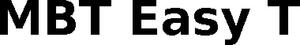

Trade Mark Journal No.2025/037 12 September 2025
WO0000001860369 (1,5,9,10)
Office of origin: European Union Intellectual Property Office (EUIPO)
Date of International Registration:5 May 2025
Date of designation in the UK:
5 May 2025

International priority date claimed: 14 November 2024
(European Union Intellectual Property Office (EUIPO))
(019106281)
- Class 1
- Reagents for scientific purposes; reagents for use in scientific apparatus for chemical or biological analysis, in particular reagents for sample preparation for mass spectrometers or MALDI-TOF mass spectrometers; reagents for analytical purposes [other than for medical or veterinary purposes]; reagents for analytical purposes for the detection of biological material for research use for non-medical, non-clinical and non-veterinary diagnostics; reagents for analytical purposes, in particular reagents for sample preparation, for the detection and/or identification of microbial and non-microbial cells, including bacteria, yeasts, fungi, particles including virions, for research use for non-medical, non-clinical and non-veterinary diagnostics; chemical-biological test kits, consisting of reagents for use in analytical tests, in particular matrix solutions, their components and cell disruption solutions, for the detection and/or identification of microbial and non-microbial cells, including bacteria, yeasts, fungi, particles including virions, for research use for non-medical, non-clinical and non-veterinary diagnostics; chemical reagents for use in diagnostic tests, other than for medical or veterinary use; reagents for use in analytical tests [other than for medical or veterinary purposes].
- Class 5
- Reagents and media for medical and veterinary diagnostic purposes; reagents for medical and veterinary diagnostic purposes, namely reagents for sample preparation and/or for use with analyzers, in particular reagents for sample preparation for mass spectrometers or MALDI-TOF mass spectrometers; reagents and media for medical and veterinary diagnostic purposes, in particular reagents for sample preparation used for the detection of infections, which break down microbial and non-microbial cells, including bacteria, yeasts, fungi, particles including virions, of a biological sample and/or prepare them for mass spectrometric analysis; diagnostic test kits, consisting of medical diagnostic reagents and sample preparation procedures, for testing biological samples for the detection of infections in medical, clinical and veterinary diagnostics; diagnostic test kits consisting of medical diagnostic reagents, in particular matrix solutions, their components and cell disruption solutions, for testing biological samples for use in the detection of infections, which break down microbial and non-microbial cells, including bacteria, yeasts, fungi, particles including virions, of a biological sample and/or prepare them for mass spectrometric analysis.
- Class 9
- Laboratory apparatus, other than for medical use; laboratory apparatus, other than for medical use, for sampling, application and transfer of microbial and non-microbial cells or cell components, including bacteria, yeasts, fungi, particles including virions.
- Class 10
- Medical apparatus; apparatus for carrying-out diagnostic tests for medical purposes; laboratory apparatus for medical use; laboratory apparatus for medical use for the collection, application and transfer of microbial and non-microbial cells or cell components, including bacteria, yeasts, fungi, particles including virions.
Bruker Daltonics GmbH & Co. KG
Representative: KOHLER SCHMID MÖBUS PATENTANWÄLTE PARTNERSCHAFTSGESELLSCHAFT MBB, Gropiusplatz 10, 70563 Stuttgart, GERMANY